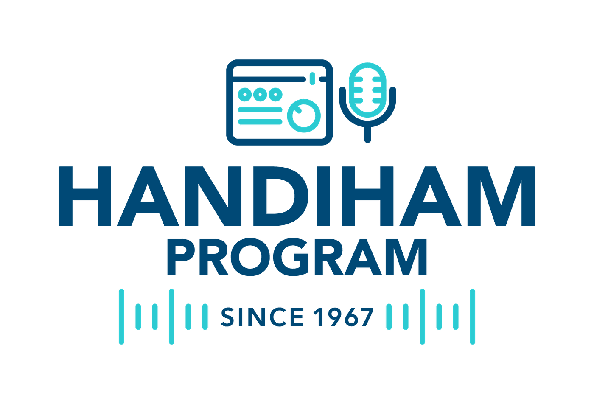

Amateur Radio for People with Disabilities
Main Content

Amateur radio is for everyone. No matter your physical ability, hearing or vision, you have a place in this community. We believe that radio is a powerful way to connect with others, learn new skills, and be part of a worldwide network of support and friendship.
We are proud supporters and advocates of HandiHam, a long-standing organization that helps people with disabilities enjoy and succeed in amateur radio. Whether you are blind, deaf, hard of hearing, physically impaired, or live with another condition that makes learning or operating radio more challenging, we are here to help.
Getting started
Amateur radio is more accessible than ever. From voice and digital modes to Morse code, there is something for everyone. If you use assistive technologies like screen readers, speech-to-text, or adaptive keyboards, many tools and radios are compatible or can be modified to fit your needs.
You do not need to have full use of your hands, hearing, or eyesight to be an excellent radio operator. There are ways to operate radios using foot pedals, speech recognition, braille displays, and even sip-and-puff devices. You also don’t need to be able to speak—many operators communicate using keyboards and text-based modes.
Studying for the exam
We can connect you with resources designed to help people with disabilities prepare for the amateur radio exam, including:
- Audio and braille study guides
- Screen reader–friendly online courses
- Deaf-accessible video content with captions and sign language
- One-on-one support from mentors and volunteers
We Are Here for You You are welcome here. We believe amateur radio is stronger when it includes everyone. We will do our part to support you, answer your questions, and walk with you through every step of your journey—from first learning about radio to earning your license and beyond.
If you are interested or need assistance, please contact us. We will connect you with a friendly volunteer who understands your needs and will help guide you through the process.
Let’s make radio inclusive, together.
- Amateur Radio Exams – Information for Disabled Individuals
- Can I find out what I missed on the exam?
- No. You’ll only be told how many questions you missed, not which ones.
- Can I take a verbal exam?
- Online: Yes. A Volunteer Examiner (VE) can read each question up to two times. Request this in advance. The exam is 30 minutes, but we allow extra time if needed—just let us know why.
- In-person: Yes. A VE can read the entire exam. You’ll have up to one hour.
- Can someone I know help during the exam?
- No. Only VEs are allowed during the exam. However, someone can help set up before the test begins, then must leave.
- Exception: One parent may observe from a distance for children under 13.
- What if I can't use an on-screen calculator?
- Online: You must use the calculator built into ExamTools. If that’s not possible, take an in-person exam.
- In-person: You may use a simple calculator and one sheet of blank paper, both provided by the team.
- Volunteers only: All examiners are unpaid volunteers. Replies may take up to 24 hours.
- Facebook Group: Quick help is available via our Facebook group (linked on our homepage).
- Exam Types: Online exams require screen sharing, room scanning, and no distractions. If you're not comfortable with this, choose an in-person exam.
- Valid ID (recent driver’s license, state ID, or passport).
- FRN (FCC Registration Number) – get this before the exam or during registration.
- A quiet, private room (not a car or outdoors).
- Clear your desk and background of anything suspicious or distracting.
- Be ready to share your full screen via Zoom.